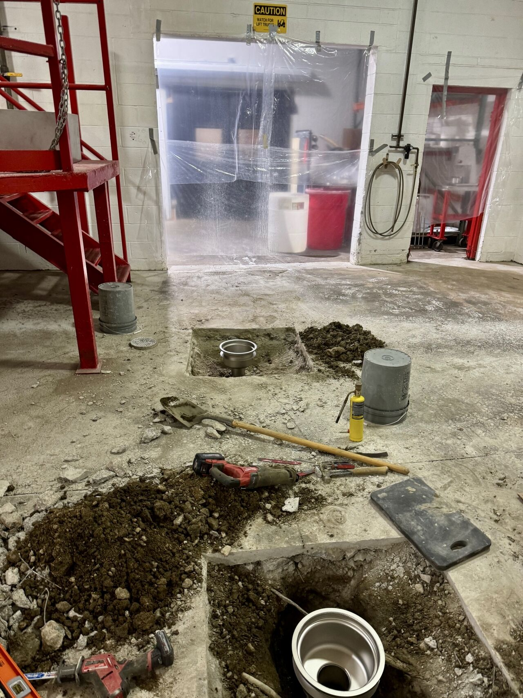
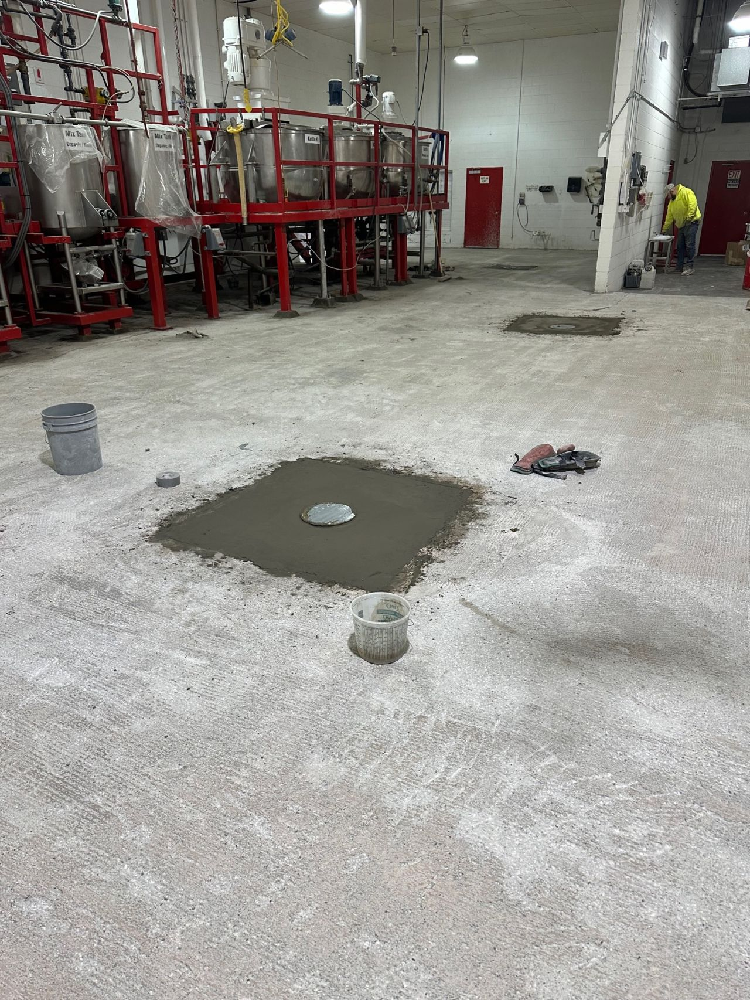
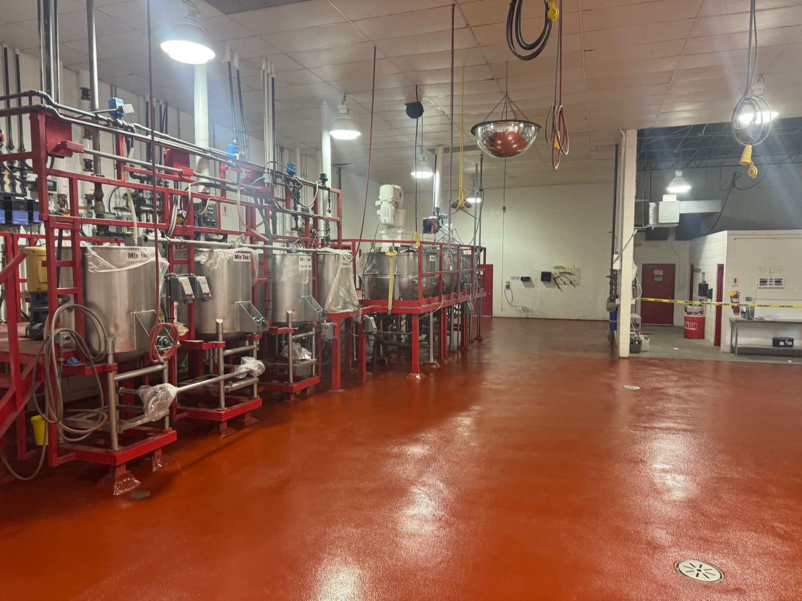

At SaniCrete, we don't just specialize in flooring — we handle the complete package. This 2,295 SF production room needed more than a new floor. It needed new drains, proper sloping, curbing, and a protective sealcoat. Here's how we delivered all of it.
Step 1: Saw Cut & Install New Drains
We saw cut and removed concrete around four drain locations, then furnished and installed four new traps and four AWI Manufacturing round top drains — specifically designed for food and beverage facilities. The cutouts were backfilled with SaniBulk fast-cure polymer concrete.
Step 2: Prep & Profile
The entire 2,295 SF was scarified and ground to remove bond-inhibiting contaminants and create the mechanical profile needed for adhesion. We key jointed at all terminations to anchor the floor system and vacuumed the entire surface to remove dust before installation.
Step 3: STX, Curbing & Sealcoat
With drains in and substrate prepped, we installed the complete SaniCrete system:
- SaniCrete STX — 3/8" stainless steel reinforced cementitious urethane, broadcasted to rejection for maximum slip resistance
- Grouted each equipment leg with SaniBulk vertical polymer concrete
- SaniCrete VR — 2" cant cove around the perimeter and around each equipment leg
- SaniCoat 200 — 100% solids epoxy sealcoat for additional chemical resistance
The Result
Our team prioritized the sloping to ensure all water flows directly to the brand new drains — no bird baths, no standing water. The drains complement the SaniCrete flooring with a seamless transition from floor to drain. A complete solution, tailored to this facility's needs.